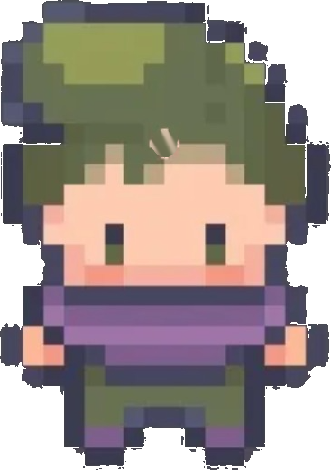
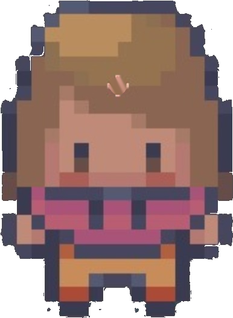

Personagens
Quem você encontra na escola
O diretor nunca parou em um emprego. Foi vendedor, monitor de museu e animador de festa vestido de triângulo, até que uma carta chegou: a Escola Pitagorome procurava um novo diretor.
A história
O anterior desistiu após três dias
Ele aceitou pelo café grátis. No portão, dois alunos se acusavam de colar na prova de matemática. Foi quando percebeu que talvez o antigo diretor tivesse um ponto.

Você
Escolha sua aparência
Antes do tour, escolha nome, se é diretor ou diretora e um dos visuais.

